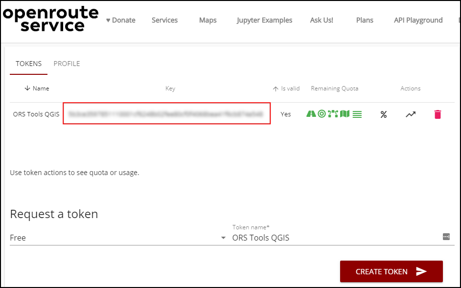
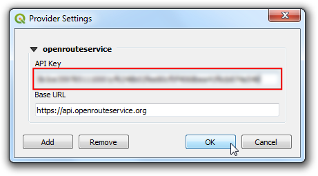

Análisis de Área de Servicio usando Openrouteservice (QGIS3)¶
El análisis de área de servicio es útil para evaluar la accesibilidad de las ubicaciones. Dadas ubicaciones de estaciones de bomberos, hospitales, estaciones de transporte público, etc. puede usar tal análisis para identificar qué áreas pueden ser servidas desde estas ubicaciones por una cierta cantidad de distancia viajada o por el tiempo demandado. Hasta reciéntemente tal análisis era difícil usando herramientas de código abierto y datos. Pero ahora tenemos acceso a una red global de calles usando OpenStreetMap (OSM) y servicios web gratuitos como Openroutservice (ORS) que puede realizar tareas complejas de enrutamiento usando datos OpenStreetMap (OSM). En este tutorial, usaremos el Complemento ORS Tools para realizar análisis de área de servicio en QGIS.
Vista general de la tarea¶
Usaremos datos de estación de tren metro para Kochi, India para determinar áreas que están dentro de 15 minutos de distancia a pie.
Otras habilidades que aprenderá¶
Cómo cargar datos de alimentación de tránsito General Transit Feed Specification (GTFS) en QGIS.
Cómo convertir datos de puntos secuenciales a trazos de línea usando la herramienta Puntos a Ruta.
Obtener los datos¶
Kochi Metro Rail Limited (KMRL) provee datos abiertos para el Proyecto Ferroviario Metro Kochi en formato Global Transit Feed Specification (GTFS-static). Solicite la descarga de datos visitando la página de Datos Abiertos.
Para su comodidad, puede descargar directamente una copia de los conjuntos de datos de los enlaces abajo:
Fuente de Datos [KMRL]
Configuración¶
Openrouteservice API provee algoritmos de enrutamiento que trabajan sobre datos geográficos libres de OpenStreetMap. Es un servicio libre basadao en web que puede ser accedido mediante un complemento QGIS. Aunque el servicio es libre, requiere registrarse y obtener una llave API. La llave API es usada para prevenir abuso y hacer cumplir límites en el uso.
Visite la página registro Openrouteservice <https://openrouteservice.org/dev/#/signup>`_ y cree una cuenta. Una vez que su cuenta esté activada, Visite su Tablero de control y solicite un token. Seleccione
Librecomo el Tipo de token e ingreseORS Tools QGIScomo el Nombre de token. Clic en CREATE TOKEN.

Una vez creada, copie la larga cadena de texto mostrada bajo
Key. Este es un identificador único asociado con su cuenta que será usado para autorizar el uso de este servicio.

Abra QGIS. Visite . Busque el complemento ORS Tools e instálelo. Clic en Cerrar.

En la Ventana principal QGIS, vaya a .

Expanda la sección openrouteservice y pegue la
clave(copiada en el paso 2) en la caja de texto API Key. Clic en Aceptar.

Procedimiento¶
Descomprima el archivo
KMRL-Open-Data.zipdescargado a una carpeta en su computadora. Notará que el directorio descomprimido contiene varios archivos texto. Cada archivo contiene datos para un aspecto diferente del sistema de tránsito. El formato de los archivos y sus usos están descritos en la Referencia GTFS. De todos los archivos, 2 archivos contienen datos geoespaciales y son de interés para nosotros. El archivoshapes.txtcontiene puntos que describen una ruta física que el vehículo toma, y el archivostops.txtcontiene la ubicación de cada parada de tránsito. Ambos de estos son archivos CSV que pueden ser importados en QGIS. Clic el botón Abrir Administrador de Fuente de Datos.

En el diálogo Administrador de Fuente de Datos, cámbiese a la pestaña Texto Delimitado. Clic el botón … junto a Nombre de archivo y explore el archivo
shapes.txt. SeleccioneCSV (valores separados por coma)como el Formato de Archivo. El Campo X y Campo Y deberían llenarse solos. Clic en Añadir.

De forma similar, clic el botón … de nuevo y seleccione el archivo ``stops.txt`. Clic en Añadir. Clic en Cerrar.

Verá que 2 nuevas capa
stopsyshapeshan sido agregadas al panel Capas. Convirtamos la capa de puntosshapesen una capa línea que representa la ruta de la línea de metro. Vaya a .

Busque y localice la herramienta . Haga doble-clic para iniciarla.

In the Points to Path dialog, select
shapesas the Input point layer. As per GTFS specifications, each individual route has a uniqueshape_idso select that from the drop-down menu as the Path group expression. We can also specify the order of points that will form the line by selectingshape_pt_sequenceas the Order expression. Click Run.

Una nueva capa
Pathsse agregará al panel Capas. Puede desactivar la visibilidad de la capashapespara ver la capa línea recién agregada.

Ahora que tenemos los datos de estaciones de metro y líneas agregadas, estamos listos para iniciar el análisis de red. En la Caja de herramientas de procesos, busque y localice la herramienta . Doble clic para iniciarla.

Seleccione
openrouteservicecomo el Proveedor. Estaremos calculando un polígono de la distancia de caminado por 15-min desde cada estación de metro. Seleccionestopscomo Capa de Punto de Entrada. Seleccionestop_idcomo el Campo ID de Capa de Entrada. Desde el desplegable Modo de viaje, seleccionefoot-walking. Como estamos interesados en un área basada en tiempo, seleccionetimecomo la Dimensión. Finalmente ingrese15minutos como los rangos. Clic en Ejecutar.

Nota
Note que la API Openrouteservice tiene un límite de 20 solicitudes por minuto para Isocronas. Por lo que si su capa tiene más de 20 puntos, puede que vea errores que indican que el límite de tasa se excedió. Puede mantener la herramienta ejecutándose y continuará procesando 20 puntos / min.
Una vez que termine la herramienta, verá que se carga una nueva capa
Isochronesen el panel Capas. Cada punto tiene un polígono asociado que representa el área que es accesibile dentro de 15 minutos a pie. Para ver esto en el contexto de los datos que fueron usados para generarlos, podemos agregar el mapa base OpenStreetMap. Deslice hacia abajo el panel Explorador y localice . Arrástrelo a la pantalla.

Se agregará una nueva capa
OpenStreetMapal panel Capas. Arrástrelo hacia abajo para cambiar el orden de capa y manténgalo en la parte de abajo de la pila de capas. Acérquese y desplácese para ver si los resultados coinciden con la red caminera. Verá que los polígonos no son circulares, debido a que el tiempo de viaje es calculado a lo largo de los caminos, por los que las regiones que no tienen caminos tendrán menos área cubierta.

Para calcular el área de servicio, necesitamos completar una última tarea. Podemos fusionar polígonos de isocronas individuales para formar un solo polígono que representa las áreas que son accesibles. Busque y localice .

Seleccione
Isochronescomo la Capa de entrada y clic en Ejecutar.

Una vez que termine el procesamiento, se agregará una nueva capa
Dissolvedal panel Capas. Este polígono representa la región completa que es accesible desde el sistema de metro a 15 minutos a pie.

Nota
Este es un ejemplo simple de como puede hacerse en QGIS un análisis de área de servicio para un proyecto de transporte público. Un análisis más extenso de análisis de área de servicio incluiría otros modos de transporte. Podríamos incluir buses alimentadores, paradas de bus cercanas y rutas que sirven esas paradas de bus para expandir el análisis. También podríamos incluir viajes por otros modos como en auto y taxi.